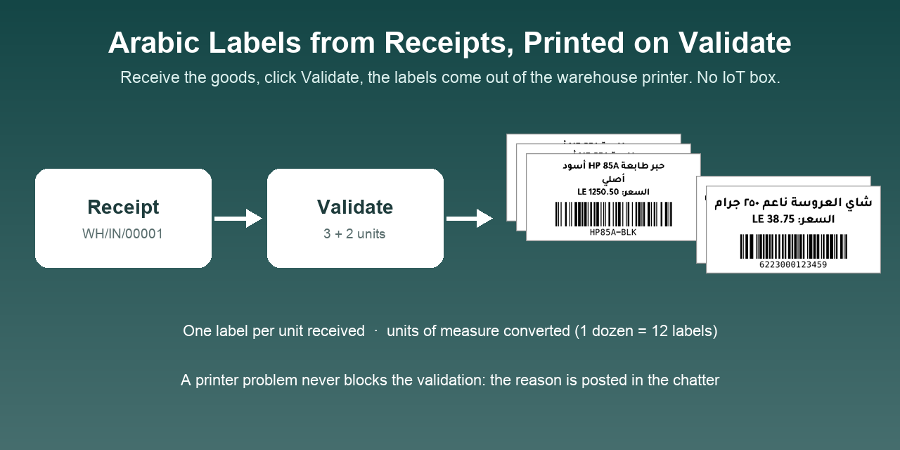
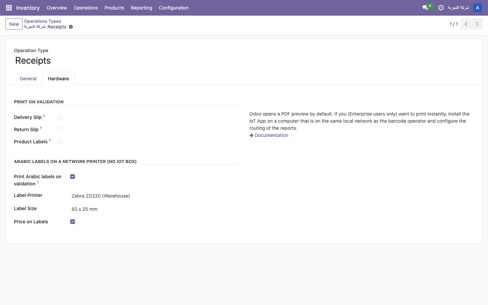
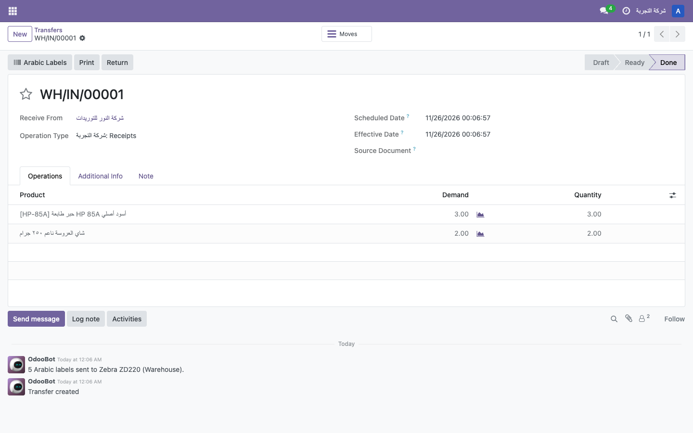

Receive the goods, click Validate, and the product labels come out of the warehouse label printer.
In Odoo, instant printing on validation needs the Enterprise IoT box. This module does it on Odoo Community with any network ZPL printer, with Arabic names printed correctly.

One label per unit received, converted to the product's unit of measure: 1 dozen gives 12 labels.
Turn on printing on validation per operation type (Receipts, Deliveries, Internal), or click Arabic Labels on any transfer.
If the printer is off, the transfer is still validated and the reason is written in its chatter.

Inventory > Configuration > Operation Types > Receipts > Hardware: choose the printer, the label size and whether to show the price.

Questions? Contact me through the Odoo Apps store page.